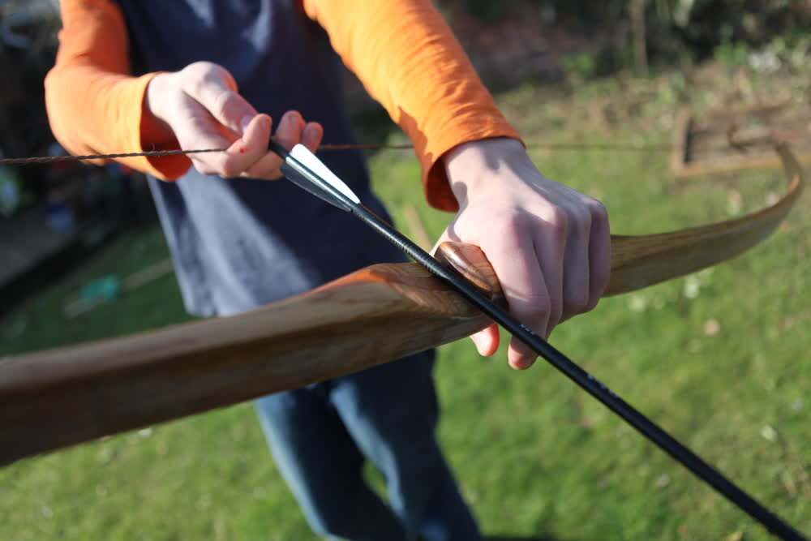

Longbow
Materials
The bow is made of oak and walnut sourced from old furniture, because I could not find a continuous piece of wood 1.85m long, the main stave of the bow is made by splicing two pieces of oak together with a scarf joint at the handle. (right) The forward surface of the bow (known as the back) was then laminated with 50gsm silk dupion fabric from a local department store. It was soaked in a generous amount of epoxy and clamped between the bow and a piece of pine covered in parcel tape to cure. This lamination is intended to stop splinters from rising in the back of the bow.
Once the bow stave was made I roughed it down to the approximate dimensions needed with a plane and spokeshave. I then began to tiller it, this is a trial and error process explained far better than I could on many websites.
Handle and Nocks
This stage of the build is fairly self-explanatory. I just removed wood until the handle fit my hand, cut an arrow rest with a hacksaw and cleaned the whole thing up with abrasives.
{kind=link}
{kind=link}
Finishing
I finished the American Longbow. It was sanded to 220 grit and varnished with 6 coats of 50% thinned spar varnish. I also dropped the draw weight to a more manageable 40lbf (180N). It seems to shoot nicely and is quite quiet.

|
|
|  | |
{kind=link}
{kind=link}
{kind=link}
{kind=link}
February 2019